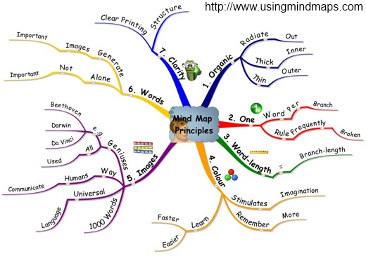
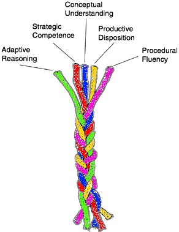

A Few Tips¶
Making good progress in any difficult field sometimes needs us to think not only about the content or the subject, but about our style of learning and practice.
So spend at least some of your time thinking about how you learn best, and how you keep yourself energized in the field. Here are some readings and ideas.
Short term versus long term memory, and Practice!¶
You can spend a pleasant afternoon reading about this. The theory is that we have very limited capacity in our short-term memory, and we forget very fast. Migration to long-term memory requires practice, and frequent refreshes.
One theory is that the best time to revise something is just before we are about to forget it! (That doesn’t seem very helpful!) But the more times we look over it, the more it sticks in our long-term memory.
So what seems to work is that one needs to initially revise frequently — perhaps see something today, look over it this evening, then again in two days time, then a week after that, etc. seems to be a good strategy.
And you cannot be a good programmer without practice!
Your mental models are the key!¶
“Experts have a mental organizational structure that facilitates the retrieval and effective application of their knowledge...” http://www.farnamstreetblog.com/2013/01/how-people-learn
We are all probably experts in our own field — sailing, breeding rabbits, movies, politics, soccer, computer science, playing music, skateboarding, chemistry, rowing, biology, poetry ... Why is it so easy to learn and use all that detail?
It turns out that a key element of expertise is how we construct and organize our mental structures. These provide a framework on which we are able to organize and hang the facts so that they relate sensibly to each other.
Much of your time in the classroom and your courses should be focussed on getting your framework built accurately and well. The facts should follow easily once you have a good way to organize them.
Using mind maps (http://en.wikipedia.org/wiki/Mind_map) is a simple idea that definitely works for some.
Flow is Important¶
Because programming is a complex task where one is trying to juggle a number of things in short-term memory, (and they decay quickly), every interruption or each time we stall and don’t know something we lose all the bits we’re trying to hold in our head at the same time. It slows us down tremendously.
Like good sports people, good programmers report that they get into “the zone” or “the flow” where they can concentrate very intensely, lose track of time, and the creativity flows with very high productivity. Of course, if we don’t know our syntax or our tools and we have to keep stopping to ask a friend if they can remember the name of some method or other, we’re definitely going to lose our flow. (And your friend’s flow will be broken too, and they’ll eventually move off somewhere else where you don’t disturb them so much.)
Search for “Programming in the Zone” or “Psychology of Flow” and build a better understanding what we’re ultimately trying to achieve as programmers. What works for others may not work for you, but knowing what it is you’re after might make it a lot easier to identify the things that work well for you!
The Five Strands of Proficiency¶
This was an important study commissioned by the President in the USA. It looked at what was needed for students to become proficient in maths.
But it is also an amazingly accurate fit for what we need for proficiency in Computer Science, or even for proficiency in playing Jazz! They found five important strands that together made one proficient:
Procedural Fluency: Learn the syntax. Learn to type. Learn your way around your tools. Learn and practice your scales. Learn to rearrange formulae.
Conceptual Understanding: Understand why the bits fit together like they do.
Strategic Competence: Can you see what to do next? Can you formulate this word problem into your notation? Can you take the music where you want it to go?
Adaptive Reasoning: Can you see how to change what you’ve learned for this new problem?
- A Productive Disposition: We need that Can Do! attitude!
- You habitually think it is worthwhile studying this stuff.
- You are diligent and disciplined enough to grind through the tough stuff, and to put in your practice hours.
- You develop a sense of effectiveness and empowerment — that you can use what you’re learning to make things happen!
What can you do? Be aware of the different dimensions, and your strengths and weaknesses. If you waste a lot of your time because you have never learned to type, or because you don’t know your way around Visual Studio well enough, or because you don’t know the syntax for a while loop, invest a bit of time in that. And think a lot. Away from the computer. About the problems, and about how the conceptual parts of the language fit together.
Check out http://mason.gmu.edu/~jsuh4/teaching/strands.htm, or Kilpatrick’s book at http://www.nap.edu/openbook.php?isbn=0309069955
Threshold Concepts and Threshold Skills¶
Threshold Concepts (also called troublesome concepts) are concepts that change the way we think about something. The idea of variables that change their value over time, or the idea of thinking about a system in terms of its states, and ideas like all values having a fixed type, or recursion, and interfaces are just a few of our threshold concepts in Computer Science.
Understanding these ideas often takes time — it may not just be an instantaneous “aha” experience — and quite often the journey to the new understanding is difficult: it often requires breaking down previous ways of thinking or viewing things, and leaves us disorientated and unsure of ourselves.
Search on Google and read a couple of introductory articles about Threshold Concepts, and the so-called liminal state — the in-between state — that we experience as we cross the threshold, and are forced to discard and adjust old ideas to be able to grasp and see things from the new perspective.
But on top of that, in addition to Threshold Concepts, Computer Science also requires Threshold Skills. These may not be cognitively demanding but they require mastery anyway: practising your music scales, practising your debugging, practising your ability to write a method, or to use loops and arrays and indexes fluidly. Here is a reference to a starting point that has more to say about this: http://www.nairtl.ie/documents/EPub_2012Proceedings.pdf#page=164
Different kinds of intelligences!¶
Some people think we have different kinds of intelligences, making different individuals more suited to some kinds of activities. Not everyone agrees, though! Others think that there is a common general intelligence underpinning all the other specialized intelligences. Take a look at http://psychology.about.com/od/educationalpsychology/ss/multiple-intell.htm
Quite interesting for those in the field of problem solving and designing and building programs is the distinction between fluid and crystallized intelligence. Search for “Fluid versus Crystallized intelligence” and see how you think constructing software draws differently from each skill.